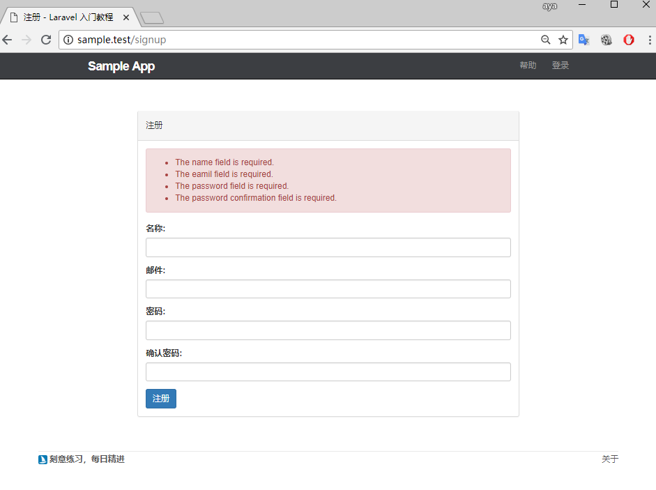

显示表单错误信息
目前我们尝试填写完表单, 如果表单信息填写失败, 页面不会展示报错信息, Laravel 默认给我们提供了一种非常好的展示错误信息的方法, 现在让我们来为应用加上错误信息展示
resources/views/shared/_errors.blade.php
@if (count($errors) > 0)
<div class="alert alert-danger">
<ul>
@foreach($errors->all() as $error)
<li>{{ $error }}</li>
@endforeach
</ul>
</div>
@endif
通过上面代码我们可以看到 Blade 模板还为我们提供了一些其它的便利方法，如：
@if (count($errors) > 0)
{{ count($errors) }}
@endif
在解析成 PHP 代码后为：
if (count($errors) > 0) {
{{ count($errors) }}
}
Blade 支持所有的循环语句和条件判断语句 @if @elseif ....
Laravel 会默认将所有的验证错误进行闪存, 当检测到错误存在时, Laravel 会自动将这些错误信息绑定到视图上, 因此我们可以在所有的视图上使用 errors 变量来显示错误信息, 需要注意的是, 在我们对 errors 进行使用时, 要先使用 count($errors) 检查其值是否为空.
定义好错误消息局部视图, 便可以在用户的注册表单中对该视图进行引用.
resources/views/users/create.blade.php
@extends('layouts.default')
@section('title', '注册')
@section('content')
<div class="col-md-offset-2 col-md-8">
<div class="panel panel-default">
<div class="panel-heading">
<h5>注册</h5>
</div>
<div class="panel-body">
@include('shared._errors')
<form method="POST" action="{{ route('users.store') }}">
{{ csrf_field() }}
<div class="form-group">
<label for="name">名称：</label>
<input type="text" name="name" class="form-control" value="{{ old('name') }}">
</div>
<div class="form-group">
<label for="email">邮箱：</label>
<input type="text" name="email" class="form-control" value="{{ old('email') }}">
</div>
<div class="form-group">
<label for="password">密码：</label>
<input type="password" name="password" class="form-control" value="{{ old('password') }}">
</div>
<div class="form-group">
<label for="password_confirmation">确认密码：</label>
<input type="password" name="password_confirmation" class="form-control" value="{{ old('password_confirmation') }}">
</div>
<button type="submit" class="btn btn-primary">注册</button>
</form>
</div>
</div>
</div>
@stop
这次填写无法通过的信息进行提交, 便能够在页面上看到错误信息提示.

password_confirmation 是我之后加的.
添加语言包
通过页面显示我们能够看到, 报错的信息是全英文, Laravel 为消息验证的多语言提供了一种非常简便的方法支持, 我们可以通过添加一个如 resources/lang/xx/validation.php 的语言包, 并在语言包的 custom 数组中对翻译语言进行设定,
'custom' => [
'email' => [
'required' => '邮件地址不能为空!',
],
],
接下来让我们使用 Composer 来安装 laravel-lang
$composer require "overtrue/laravel-lang:~3.0"
由于该包已经配置了包的自动注册, 所以不需要你在配置文件中去注册服务提供器即可使用
最后,我们将语言设置为中文
config/app.php
<?php
return [
.
.
.
'locale' => 'zh-CN',
.
.
.
];
现在重新尝试, 可以看到已经改为中文了

如果需要对属性或者验证信息重写, 直接在 resources/lang/xx/validation.php 中进行改写, 更多方式参考 overtrue/laravel-lang 中文手册